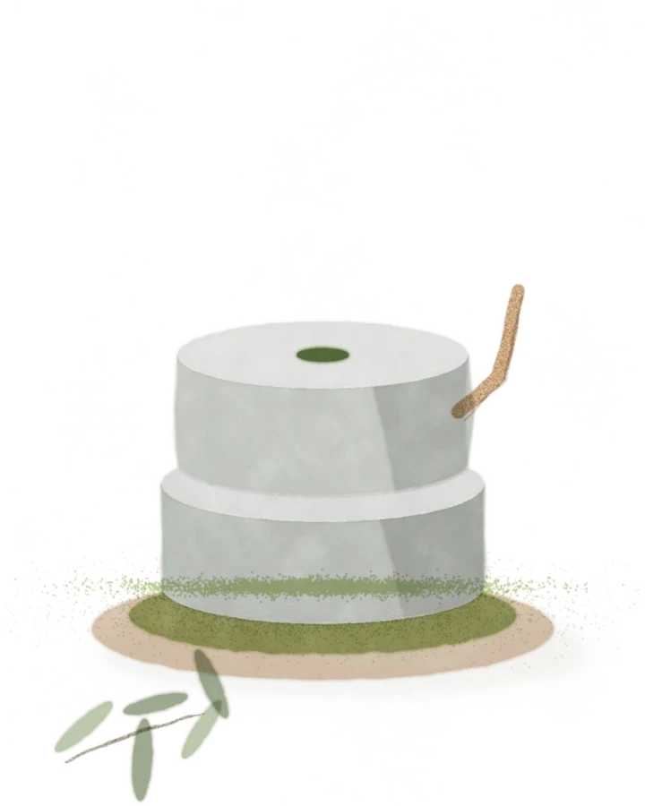
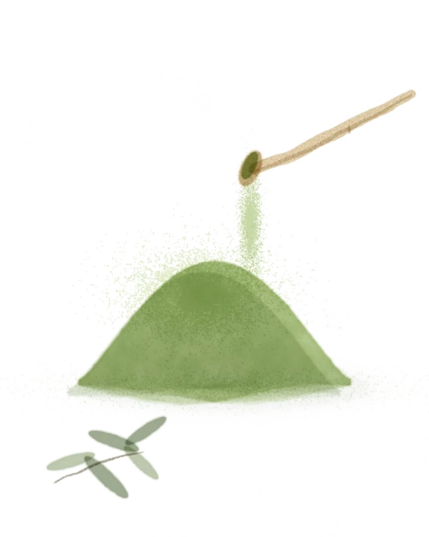

<title>Mood Matcha Historia</title>
<meta charset="utf-8">
<meta name="claude:viewport-fit-sides" content="cover">
<link rel="preconnect" href="https://fonts.googleapis.com">
<link rel="stylesheet" href="https://fonts.googleapis.com/css2?family=Bagel+Fat+One&family=Jost:wght@300;400;500&family=Cormorant+Garamond:ital,wght@1,400&display=swap">
<style>
/* Layout: una historia que se cuenta al bajar. El escenario se queda fijo; cambian la palabra gigante, la acuarela, el fondo y el polvo que cae. */
:root{
  --tinta:#1f3a28; --verde:#1d9e55; --hoja:#28602f; --suave:#4f6455;
  --menta:#add9af; --vainilla:#fbf8d1; --melocoton:#f3e5cd; --pistacho:#c9e2af; --crema:#fffef1;
  --gordo:"Bagel Fat One","Arial Black",sans-serif; --sans:"Jost",system-ui,sans-serif; --serif:"Cormorant Garamond",Georgia,serif;
}
*{box-sizing:border-box}
html,body{overflow-x:clip}
body{margin:0;background:var(--crema);color:var(--tinta);font:300 17px/1.6 var(--sans)}
.cab{position:fixed;top:env(safe-area-inset-top,0px);left:0;right:0;z-index:20;display:flex;justify-content:space-between;align-items:center;
  padding:18px max(20px,env(safe-area-inset-left,0px)) 18px max(20px,env(safe-area-inset-right,0px));pointer-events:none}
.cab > *{pointer-events:auto}
.logo{font:300 20px/1 var(--sans);letter-spacing:.06em;color:var(--tinta);text-decoration:none;white-space:nowrap}
.logo svg{height:.72em;width:auto;vertical-align:-.02em}
.cab nav{display:flex;gap:22px;font-size:14px}
.cab nav a{color:var(--tinta);text-decoration:none}
.cesta{border:1px solid rgba(31,58,40,.3);border-radius:99px;padding:7px 16px;font-size:14px;background:rgba(255,255,255,.4);backdrop-filter:blur(6px)}

/* historia fija */
.historia{position:relative;height:calc(var(--n,5) * 100vh)}
.escenario{position:sticky;top:0;height:100vh;height:100svh;overflow:hidden;background:linear-gradient(120deg,var(--c1,#add9af),var(--c2,#fbf8d1));isolation:isolate}
.mancha{position:absolute;border-radius:58% 42% 55% 45% / 48% 60% 40% 52%;z-index:0;will-change:transform;
  background:radial-gradient(circle at 35% 35%,rgba(255,255,255,.85),rgba(255,255,255,0) 70%),var(--m,var(--pistacho));opacity:.75;filter:saturate(1.05)}
.m1{width:min(34vw,420px);aspect-ratio:1;right:6%;top:14%;--m:var(--menta)}
.m2{width:min(14vw,160px);aspect-ratio:1;left:8%;bottom:14%;--m:var(--melocoton);border-radius:50%}
.m3{width:min(8vw,90px);aspect-ratio:1;right:30%;top:8%;--m:#f4e278;border-radius:50%}
canvas.polvo{position:absolute;inset:0;width:100%;height:100%;z-index:3;pointer-events:none}
.palabra{position:absolute;left:0;right:0;top:50%;transform:translateY(-46%);z-index:1;text-align:center;
  font:400 clamp(72px,19vw,300px)/.82 var(--gordo);letter-spacing:-.01em;color:var(--tinta);white-space:nowrap;pointer-events:none}
.palabra span{display:inline-block;transition:transform .7s cubic-bezier(.2,.9,.25,1.15),opacity .5s;transition-delay:calc(var(--i)*35ms)}
.palabra.sale span{transform:translateY(-60%) rotate(-6deg);opacity:0}
.palabra.entra span{transform:translateY(70%) rotate(8deg);opacity:0;transition:none}
.objeto{position:absolute;left:50%;top:52%;z-index:2;width:min(46vw,520px);max-width:100%;transform:translate(-50%,-50%);pointer-events:none}
.objeto img{position:absolute;inset:0;margin:auto;width:100%;height:auto;opacity:0;will-change:transform,opacity;filter:drop-shadow(0 30px 40px rgba(31,58,40,.18))}
.objeto{aspect-ratio:4/5}
.objeto img.ancha{width:135%;left:-17.5%;right:auto;top:12%}
.texto{position:absolute;z-index:4;left:max(20px,env(safe-area-inset-left,0px));top:22%;max-width:300px;display:grid;gap:12px}
.num{width:30px;height:30px;border:1.5px solid var(--tinta);border-radius:50%;display:grid;place-items:center;font-size:13px;font-weight:400}
.texto h2{margin:0;font:400 clamp(22px,2.2vw,30px)/1 var(--gordo);letter-spacing:.01em}
.texto p{margin:0;font-size:15px;color:var(--suave)}
.btn{display:inline-flex;align-items:center;gap:10px;width:max-content;border:0;border-radius:99px;padding:11px 20px;background:var(--tinta);color:#fff;text-decoration:none;font:400 14px/1 var(--sans);cursor:pointer}
.btn--claro{background:#fff;color:var(--tinta)}
.dato{position:absolute;z-index:4;right:max(20px,env(safe-area-inset-right,0px));bottom:16%;text-align:right;display:grid;gap:4px;max-width:220px}
.dato b{font:400 clamp(30px,3.4vw,48px)/1 var(--serif);font-style:italic;color:var(--hoja)}
.dato span{font-size:13px;color:var(--suave)}
.fade{transition:opacity .45s ease,transform .45s ease}
.fade.fuera{opacity:0;transform:translateY(10px)}
.puntos{position:absolute;z-index:4;left:max(20px,env(safe-area-inset-left,0px));bottom:6%;display:flex;gap:8px}
.puntos i{width:22px;height:4px;border-radius:4px;background:rgba(31,58,40,.2);transition:background .4s,width .4s}
.puntos i.on{background:var(--tinta);width:38px}
.pista{position:absolute;z-index:4;left:50%;bottom:4%;transform:translateX(-50%);font-size:12px;letter-spacing:.18em;text-transform:uppercase;color:var(--suave);transition:opacity .4s}

/* final: elige tu mood */
.final{position:absolute;inset:0;z-index:5;display:grid;place-items:center;align-content:center;gap:22px;text-align:center;padding:0 20px;opacity:0;pointer-events:none;transition:opacity .6s}
.final.on{opacity:1;pointer-events:auto}
.final small{font-size:12px;letter-spacing:.2em;text-transform:uppercase}
.final h2{margin:0;font:400 clamp(56px,11vw,170px)/.86 var(--gordo)}
.moods{display:flex;flex-wrap:wrap;gap:8px;justify-content:center;max-width:560px}
.moods span{padding:7px 14px;border-radius:99px;background:var(--c);font-size:13px;letter-spacing:.12em;text-transform:uppercase;font-weight:400;
  animation:flota 4s ease-in-out infinite;animation-delay:calc(var(--i)*.3s)}
@keyframes flota{50%{transform:translateY(-6px)}}
.botones{display:flex;gap:10px;flex-wrap:wrap;justify-content:center}

.despues{padding:90px max(20px,env(safe-area-inset-left,0px));text-align:center;background:#fff}
.despues p{margin:0 auto;max-width:52ch;color:var(--suave)}

@media (max-width:760px){
  .cab nav{display:none}
  .objeto{width:min(78vw,380px);top:50%}
  .palabra{top:44%;font-size:clamp(48px,16vw,140px)}
  .texto{top:auto;bottom:15%;left:20px;right:20px;max-width:none;gap:8px;background:rgba(255,255,255,.55);backdrop-filter:blur(10px);border-radius:20px;padding:16px}
  .texto .btn{display:none}
  .dato{top:13%;bottom:auto;right:20px}
  .puntos{bottom:4.5%;left:20px}
  .pista{display:none}
  .m1{width:62vw;right:-14%;top:20%}
}
@media (prefers-reduced-motion:reduce){.palabra span,.fade,.final,.moods span{transition:none;animation:none}}
</style>

<svg width="0" height="0" style="position:absolute" aria-hidden="true"><symbol id="oo" viewBox="0 0 38 22"><path d="M19 5A10 10 0 1 0 19 17A10 10 0 1 0 19 5Z" fill="none" stroke="currentColor" stroke-width="1.6"/></symbol></svg>

<header class="cab">
  <a class="logo" href="#">M<svg viewBox="0 0 38 22"><use href="#oo"/></svg>DMATCHA</a>
  <nav><a href="#">Comprar</a><a href="#">Elige tu mood</a><a href="#">Nosotros</a><a href="#">Diario</a></nav>
  <span class="cesta">Cesta 0</span>
</header>

<section class="historia" id="historia" aria-label="Del molino a tu taza">
  <div class="escenario" id="escenario">
    <div class="mancha m1" data-v="-60"></div>
    <div class="mancha m2" data-v="90"></div>
    <div class="mancha m3" data-v="140"></div>
    <div class="palabra" id="palabra" aria-live="polite"></div>
    <div class="objeto" id="objeto">
      
      
      
      
    </div>
    <canvas class="polvo" id="polvo" aria-hidden="true"></canvas>
    <div class="texto fade" id="texto">
      <span class="num" id="t-n">1</span>
      <h2 id="t-h">Muele</h2>
      <p id="t-p"></p>
      <a class="btn" href="#">Ver más →</a>
    </div>
    <div class="dato fade" id="dato"><b id="d-b"></b><span id="d-s"></span></div>
    <div class="puntos" id="puntos"></div>
    <div class="pista" id="pista">Baja para prepararlo</div>
    <div class="final" id="final">
      <small>Ya lo tienes</small>
      <h2>Elige tu<br>mood</h2>
      <div class="moods">
        <span style="--c:#f4e278;--i:0">Good</span><span style="--c:#89b3d8;--i:1">Chill</span><span style="--c:#9fbcab;--i:2">Focus</span>
        <span style="--c:#e3e3d6;--i:3">Monday</span><span style="--c:#edab57;--i:4">Social</span><span style="--c:#beadd4;--i:5">Slow</span>
      </div>
      <div class="botones"><a class="btn" href="#">Comprar mi lata</a><a class="btn btn--claro" href="#">Jugar a elegir mi mood</a></div>
    </div>
  </div>
</section>

<section class="despues"><p>Aquí seguiría la web: el juego, la compra, las recetas… La parte de arriba es solo la idea del vídeo aplicada a Mood Matcha.</p></section>

<script>
const CAP = [
  { w:'MUELE',    h:'Muele',    p:'Hojas nuevas de primavera, molidas despacio en molino de piedra hasta volverse polvo fino.', b:'1ª cosecha', s:'Matcha Uji, grado ceremonial', c:['#add9af','#fbf8d1'] },
  { w:'TAMIZA',   h:'Tamiza',   p:'Una cucharadita de bambú y un colador fino. Sin grumos.', b:'2 g', s:'una cucharadita', c:['#fbf8d1','#f3e5cd'] },
  { w:'BATE',     h:'Bate',     p:'70 ml de agua sin hervir y el chasen en zigzag hasta que haga espuma.', b:'80 °C · 15 s', s:'nunca hirviendo', c:['#c9e2af','#add9af'] },
  { w:'DISFRUTA', h:'Disfruta', p:'Solo, en latte, con hielo o con tónica. Como te pida el día.', b:'Tu mood', s:'cada taza, la tuya', c:['#f3e5cd','#fffef1'] }
];
const N = CAP.length + 1; // + el final
const $ = s => document.querySelector(s);
const hist = $('#historia'), pal = $('#palabra'), imgs = [...document.querySelectorAll('#objeto img')];
const texto = $('#texto'), dato = $('#dato'), fin = $('#final'), pista = $('#pista'), esc = $('#escenario');
hist.style.setProperty('--n', N + 1);
$('#puntos').innerHTML = CAP.map(() => '<i></i>').join('') + '<i></i>';
const puntos = [...document.querySelectorAll('#puntos i')];
const reducido = matchMedia('(prefers-reduced-motion: reduce)').matches;

function mezcla(a, b, t){ const h = x => [1,3,5].map(i => parseInt(x.slice(i,i+2),16)); const A=h(a),B=h(b);
  return '#' + A.map((v,i) => Math.round(v + (B[i]-v)*t).toString(16).padStart(2,'0')).join(''); }

let actual = -1;
function ponPalabra(i){
  const w = i < CAP.length ? CAP[i].w : '';
  pal.classList.add('sale');
  setTimeout(() => {
    pal.innerHTML = [...w].map((ch,k) => `<span style="--i:${k}">${ch}</span>`).join('');
    pal.classList.remove('sale'); pal.classList.add('entra'); void pal.offsetWidth; pal.classList.remove('entra');
  }, actual === -1 || reducido ? 0 : 260);
}
function ponTexto(i){
  [texto, dato].forEach(e => e.classList.add('fuera'));
  setTimeout(() => {
    if (i < CAP.length){ const c = CAP[i];
      $('#t-n').textContent = i + 1; $('#t-h').textContent = c.h; $('#t-p').textContent = c.p; $('#d-b').textContent = c.b; $('#d-s').textContent = c.s;
      [texto, dato].forEach(e => e.classList.remove('fuera')); }
  }, actual === -1 ? 0 : 300);
}

let prog = 0, velocidad = 0, ultimo = 0;
function pinta(){
  const r = hist.getBoundingClientRect(), total = hist.offsetHeight - innerHeight;
  const p = Math.min(1, Math.max(0, -r.top / total));
  velocidad = Math.abs(p - ultimo) * 60; ultimo = p;
  const x = p * N;                       // 0..N
  const i = Math.min(N - 1, Math.floor(x)), t = x - i;
  if (i !== actual){ if (i < CAP.length){ ponPalabra(i); ponTexto(i); } else { pal.classList.add('sale'); [texto,dato].forEach(e => e.classList.add('fuera')); } actual = i; }
  fin.classList.toggle('on', i >= CAP.length);
  pista.style.opacity = p > .03 ? 0 : 1;
  puntos.forEach((d,k) => d.classList.toggle('on', k === i));
  // fondo: mezcla del capítulo actual al siguiente en el último tramo
  const a = CAP[Math.min(i, CAP.length-1)].c, b = (CAP[i+1] || { c:['#add9af','#f3e5cd'] }).c;
  const k = Math.max(0, (t - .6) / .4);
  esc.style.setProperty('--c1', mezcla(a[0], b[0], k)); esc.style.setProperty('--c2', mezcla(a[1], b[1], k));
  // acuarelas: entra desde abajo, flota, sale hacia arriba
  imgs.forEach((im, j) => {
    const d = x - j;                      // 0..1 mientras es su capítulo
    let o = 0, y = 40, s = .9, rot = 0;
    if (d > -0.35 && d < 1.3){
      if (d < .15){ const u = (d + .35) / .5; o = u; y = 40 * (1 - u); s = .9 + .1 * u; }
      else if (d < .8){ const u = (d - .15) / .65; o = 1; y = -14 * u; s = 1; rot = (u - .5) * 4; }
      else { const u = (d - .8) / .5; o = 1 - u; y = -14 - 60 * u; s = 1 - .12 * u; rot = 2 + 6 * u; }
    }
    if (j === CAP.length - 1 && x >= CAP.length){ o = 0; }
    im.style.opacity = Math.max(0, Math.min(1, o));
    im.style.transform = `translateY(${y}%) scale(${s}) rotate(${rot}deg)`;
  });
  document.querySelectorAll('.mancha').forEach(m => m.style.transform = `translateY(${-p * (+m.dataset.v)}vh) rotate(${p * 90}deg)`);
  prog = p;
}

/* polvo de matcha que cae, sobre todo al pasar de un capítulo a otro */
const cv = $('#polvo'), cx = cv.getContext('2d'); let part = [];
function tam(){ cv.width = cv.clientWidth * devicePixelRatio; cv.height = cv.clientHeight * devicePixelRatio; }
function polvo(){
  const W = cv.width, H = cv.height, dpr = devicePixelRatio;
  const nuevos = reducido ? 0 : Math.min(14, 1 + velocidad * 220);
  for (let k = 0; k < nuevos; k++) part.push({ x: W/2 + (Math.random()-.5) * W * .18, y: H * .18 + Math.random() * 30,
    vx: (Math.random()-.5) * .6 * dpr, vy: (1 + Math.random() * 2.2) * dpr, r: (.6 + Math.random() * 2.4) * dpr, a: .35 + Math.random() * .5,
    c: Math.random() < .75 ? '106,160,64' : '40,96,47' });
  cx.clearRect(0, 0, W, H);
  part = part.filter(q => q.y < H + 10 && q.a > .02);
  for (const q of part){ q.x += q.vx + Math.sin(q.y / 40) * .3 * dpr; q.y += q.vy; q.vy += .015 * dpr; q.a *= .997;
    cx.fillStyle = `rgba(${q.c},${q.a})`; cx.beginPath(); cx.arc(q.x, q.y, q.r, 0, 6.283); cx.fill(); }
  velocidad *= .9;
  requestAnimationFrame(polvo);
}
addEventListener('resize', () => { tam(); pinta(); });
addEventListener('scroll', pinta, { passive:true });
tam(); pinta(); requestAnimationFrame(polvo);
</script>
